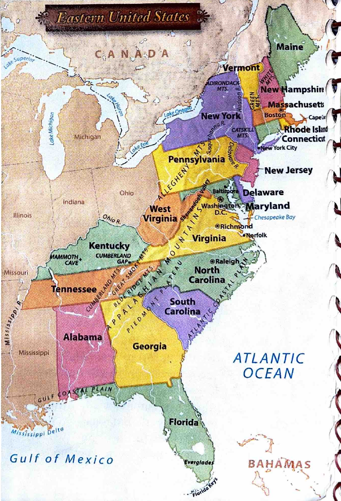

Skills Sheet 8, page 2 · Eastern Mountains and Cities
Appalachian mountain ranges
Source task 11
The Appalachian Mountains, North America’s second largest mountain system, extend from Canada to Alabama and are made up of many mountain ranges. Using the map on p. 50 of your textbook, find the states most associated with the following ranges of the Appalachian Mountains:
- Green Mountains
- White Mountains
- Catskill Mountains
- Allegheny Mountains
- Blue Ridge Mountains
- Great Smoky Mountains
- Cumberland Mountains
Eastern Cities
Source task 1
Using the map on pp. 346–347 of your textbook, locate these port cities and name their states and the bodies of water on which they are located.
- Portland
- Boston
- Buffalo
- Baltimore
- Norfolk
- Charleston
- Mobile
Source task 2
Which eastern capital city is on the Connecticut River? The Susquehanna River? The Atlantic Coast?
Source task 3
What is the capital city of America’s smallest state and the name of that state?

Choose your answers
The map-label tasks are separate multiple-choice questions. Use the original textbook page 50 map below for mountain ranges and Atlas A4 (textbook pages 346–347) for cities.
Source and adaptation
Black-text directions, seven mountain names and seven port-city names were compared visually with printed page 16. Blue filled answers are excluded from the study reading. The original source has no separate map illustration on this page. Label tasks and the three-part capital-city task are split into multiple-choice questions. The answer-filled scan is not included.
The textbook page 50 map was located in the supplied Chapter 4 PDF and compared with this worksheet. The mountain task retains the source textbook map and answer-key associations. The map is an unaltered rectangular crop: its blue water and printed labels remain intact. No answer-filled workbook scan is included.